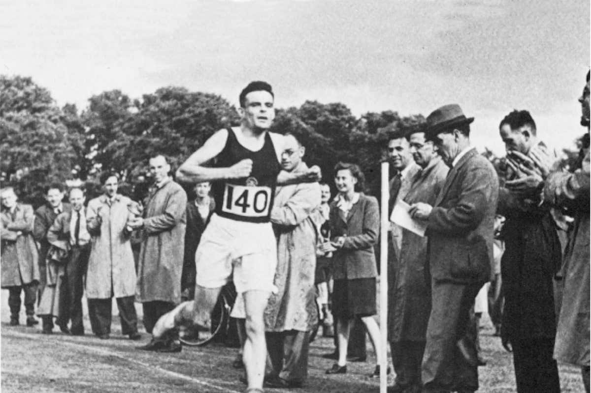

Trivia
Did you know?
- He was an Olympic-level runner.
He joined running clubs, becoming a competitive amateur and winning several races. In 1948, his best marathon time was 2 hours 46 minutes 3 seconds — only 11 minutes slower than the Olympic winning time that year.
- He developed a new field of biology out of his fascination with daisies.
The subject of one of his seminal papers on the topic was called “Outline of the Development of the Daisy.” It was a mathematical explanation of how things grow. His work on the subject has been cited more than 8,000 times
- He didn’t keep his sexuality a secret among friends.
The laws at the time prevented Turing from being openly gay, but he never kept his sexuality secret either. He was open with his social circles at Kings College in Cambridge. In 1952, he was arrested and charged with “indecency” after a brief relationship with another man. He did not deny the charges.

Alan Turing, Alan running.